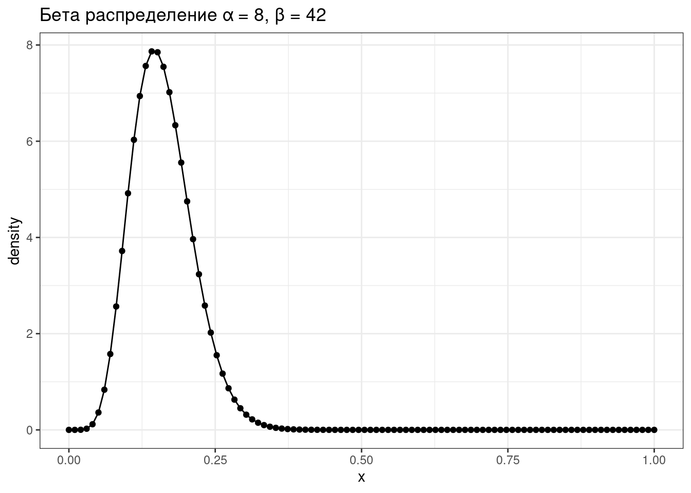
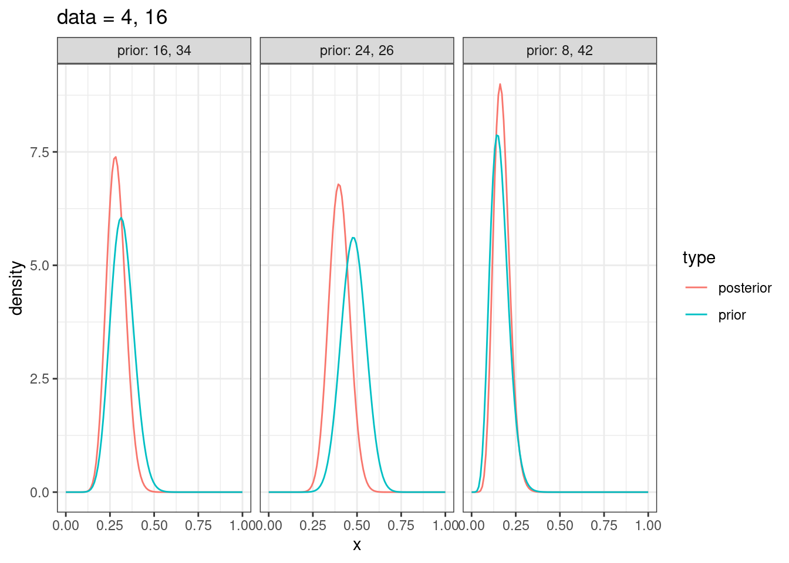
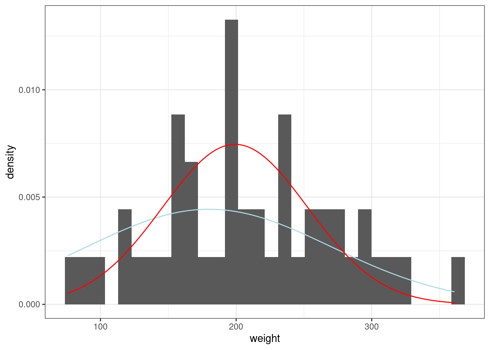

5 Байесовский статистический вывод
5.1 Нотация
В байесовском подходе статистический вывод описывается формулой Байеса
\[P(θ|Data) = \frac{P(Data|θ)\times P(θ)}{P(Data)}\]
- \(P(θ|Data)\) — апостериорная вероятность (posterior)
- \(P(Data|θ)\) — функция правдоподобия (likelihood)
- \(P(θ)\) — априорная вероятность (prior)
- \(P(Data)\) — нормализующий делитель
В литературе можно еще встретить такую запись:
\[P(θ|Data) \propto P(Data|θ)\times P(θ)\]
На прошлых занятиях мы говорили, что функция правдоподобия не обязана интегрироваться до 1, тогда почему, назвав часть формулы Байеса \(P(Data|θ)\) функцией правдоподобия, мы оставляем нотацию, будто это функция вероятностей? Потому что это условная вероятность, она не обязана интегрироваться до 1.
5.2 Категориальный пример
Для примера я взял датасет, который содержит спамерские и обычные смс-сообщения, выложенный UCI Machine Learning на kaggle и при помощи пакета udpipe токенизировал и определил часть речи:
sms_pos <- read_csv("https://raw.githubusercontent.com/agricolamz/2022_da4l/master/data/spam_sms_pos.csv")
glimpse(sms_pos)Rows: 34
Columns: 3
$ type <chr> "ham", "ham", "ham", "ham", "ham", "ham", "ham", "ham", "ham", "h…
$ upos <chr> "ADJ", "ADP", "ADV", "AUX", "CCONJ", "DET", "INTJ", "NOUN", "NUM"…
$ n <dbl> 4329, 5004, 5832, 5707, 1607, 3493, 1676, 12842, 1293, 2424, 1144…sms_pos %>%
group_by(type) %>%
mutate(ratio = n/sum(n),
upos = fct_reorder(upos, n, mean, .desc = TRUE)) %>%
ggplot(aes(type, ratio))+
geom_col()+
geom_label(aes(label = round(ratio, 3)), position = position_stack(vjust = 0.5))+
facet_wrap(~upos, scales = "free_y")
Давайте полученные доли считать нашей моделью: сумма всех чисел внутри каждого типа (ham/spam) дает в сумме 1. Мы получили новое сообщение:
Call FREEPHONE 0800 542 0825 now!
Модель udpipe разобрала его следующим образом:
VERB NUM NUM NUM NUM ADV PUNCT
Понятно, что это – спам, но мы попытаемся применить байесовский статистический вывод, чтобы определить тип сообщения. Предположим, что машина считает обе гипотезы равновероятными, т. е. ее априорное распределение гипотез равно 0.5 каждая. На минуту представим, что машина анализирует текст пословно. Первое слово типа VERB. Функции правдоподобия равны 0.135 и 0.096 для сообщений типа ham и spam соответственно. Применим байесовский апдейт:
tibble(model = c("ham", "spam"),
prior = 0.5,
likelihood = c(0.135, 0.096),
product = prior*likelihood,
posterior = product/sum(product))Вот мы и сделали байесовский апдейт. Теперь апостериорное распределение, которое мы получили на предыдущем шаге, мы можем использовать в новом апдейте. Следующее слово в сообщении типа NUM.
tibble(model = c("ham", "spam"),
prior_2 = c(0.584, 0.416),
likelihood_2 = c(0.016, 0.117),
product_2 = prior_2*likelihood_2,
posterior_2 = product_2/sum(product_2))Уже на второй итерации, наша модель почти уверена, что это сообщение spam. На третьей итерации уверенность только растет:
tibble(model = c("ham", "spam"),
prior_3 = c(0.161, 0.839),
likelihood_3 = c(0.016, 0.117),
product_3 = prior_3*likelihood_3,
posterior_3 = product_3/sum(product_3))На основе первых трех слов посчитайте посчитайте вероятность гипотезы, что перед нами спамерское сообщение, если предположить, что каждое пятое сообщение – спам. Ответ округлите до трех знаков после запятой.
Из формулы Байеса следует, что не обязательно каждый раз делить на нормализующий делитель, это можно сделать единожды.
tibble(model = c("ham", "spam"),
prior = 0.5,
likelihood = c(0.135, 0.096),
likelihood_2 = c(0.016, 0.117),
product = prior*likelihood*likelihood_2*likelihood_2,
posterior = product/sum(product))Из приведенных рассуждений также следует, что все равно в каком порядке мы производим байесовский апдейт: мы могли сначала умножить на значение правдоподобия для категории NUM и лишь в конце на значение правдоподобия VERB.
Также стоит отметить, что если данных много, то через какое-то время становится все равно, какое у нас было априорное распределение. Даже в нашем примере, в котором мы проанализировали первые три слова сообщения, модель, прогнозирующая, что сообщение спамерское, выиграет, даже если, согласно априорному распределению, спамерским является каждое 20 сообщение:
tibble(model = c("ham", "spam"),
prior = c(0.95, 0.05),
likelihood = c(0.135, 0.096),
likelihood_2 = c(0.016, 0.117),
product = prior*likelihood*likelihood_2*likelihood_2,
posterior = product/sum(product))Самым главным отличием байесовского статистического вывода от фриквентистского, является то, что мы в результате получаем вероятность каждой из моделей. Это очень значительно отличается от фриквентистской практики нулевых гипотез и p-value, в соответствии с которыми мы можем лишь отвергнуть или не отвергнуть нулевую гипотезу.
Вашего друга похитили а на почту отправили датасет,
в котором записаны данные о погоде из пяти городов. Ваш телефон
зазвонил, и друг сказал, что не знает куда его похитили, но за окном
легкий дождь (Rain). А в какой-то из следующих дней —
сильный дождь (Rain, Thunderstorm). Исходя из явно
неверного предположения, что погодные условия каждый день не зависят
друг от друга, сделайте байесовский апдейт и предположите, в какой город
вероятнее всего похитили друга.
Укажите получившуюся вероятность. Выполняя задание, округлите все вероятности и значения правдоподобия до 3 знаков после запятой.
5.3 Разница между фриквентиским и байесовским подходами

Картинка из одной из моих любимых книг по статистике (Efron and Hastie 2016: 34).
5.4 Биномиальные данные
Биномиальные данные возникают, когда нас интересует доля успехов в какой-то серии эксперементов Бернулли.
5.4.1 Биномиальное распределение
Биномиальное распределение — распределение количества успехов эксперементов Бернулли из n попыток с вероятностью успеха p.
\[P(k | n, p) = \frac{n!}{k!(n-k)!} \times p^k \times (1-p)^{n-k} = {n \choose k} \times p^k \times (1-p)^{n-k}\] \[ 0 \leq p \leq 1; n, k > 0\]
tibble(x = 0:50,
density = dbinom(x = x, size = 50, prob = 0.16)) %>%
ggplot(aes(x, density))+
geom_point()+
geom_line()+
labs(title = "Биномиальное распределение p = 0.16, n = 50")5.4.2 Бета распределение
\[P(x; α, β) = \frac{x^{α-1}\times (1-x)^{β-1}}{B(α, β)}; 0 \leq x \leq 1; α, β > 0\]
Бета функция:
\[Β(α, β) = \frac{Γ(α)\times Γ(β)}{Γ(α+β)} = \frac{(α-1)!(β-1)!}{(α+β-1)!} \]
tibble(x = seq(0, 1, length.out = 100),
density = dbeta(x = x, shape1 = 8, shape2 = 42)) %>%
ggplot(aes(x, density))+
geom_point()+
geom_line()+
labs(title = "Бета распределение α = 8, β = 42")
Можно поиграть с разными параметрами:
shiny::runGitHub("agricolamz/beta_distribution_shiny") \[\mu = \frac{\alpha}{\alpha+\beta}\]
\[\sigma^2 = \frac{\alpha\times\beta}{(\alpha+\beta)^2\times(\alpha+\beta+1)}\]
5.4.3 Байесовский апдейт биномиальных данных
\[Beta_{post}(\alpha_{post}, \beta_{post}) = Beta(\alpha_{prior}+\alpha_{data}, \beta_{prior}+\beta_{data}),\] где \(Beta\) — это бета распределение
shiny::runGitHub("agricolamz/bayes_for_binomial_app") Немного упрощая данные из статьи (Rosenbach 2003: 394), можно сказать что носители британского английского предпочитают s-генитив (90%) of-генитиву (10%). Проведите байесовский апдейт, если Вы наблюдаете в интервью британского актера из 120 контекстов 92 s-генитивов. Априорное распределение берите соразмерное данным. Ответ округлите до трёх или менее знаков после запятой.
Параметр альфа:
Параметр бета:
5.4.4 Байесовский апдейт биномиальных данных: несколько моделей
tibble(x = rep(seq(0, 1, length.out = 100), 6),
density = c(dbeta(unique(x), shape1 = 8, shape2 = 42),
dbeta(unique(x), shape1 = 16, shape2 = 34),
dbeta(unique(x), shape1 = 24, shape2 = 26),
dbeta(unique(x), shape1 = 8+4, shape2 = 42+16),
dbeta(unique(x), shape1 = 16+4, shape2 = 34+16),
dbeta(unique(x), shape1 = 24+4, shape2 = 26+16)),
type = rep(c("prior", "prior", "prior", "posterior", "posterior", "posterior"), each = 100),
dataset = rep(c("prior: 8, 42", "prior: 16, 34", "prior: 24, 26",
"prior: 8, 42", "prior: 16, 34", "prior: 24, 26"), each = 100)) %>%
ggplot(aes(x, density, color = type))+
geom_line()+
facet_wrap(~dataset)+
labs(title = "data = 4, 16")
5.4.5 Что почитать?
Если остались неясности, то можно посмотреть 2-ую главу (Robinson 2017).
5.5 Байесовский апдейт нормального распределения
Встроенный датасет ChickWeight содержит вес цыплят (weight) в зависимости от типа диеты (Diet). Мы будем анализировать 20-дневных птенцов.
ChickWeight %>%
filter(Time == 20) ->
chicks
chicks %>%
ggplot(aes(weight))+
geom_density()Начнем с апостериорных параметров для наблюдений \(x_1, ... x_n\) со средним \(\mu_{data}\) известной дисперсией \(\sigma_{known}^2\)
5.5.1 Байесовский апдейт нормального распределения: выбор из нескольких моделей
Мы можем рассматривать эту задачу как выбор между несколькими моделями с разными средними:
tibble(x = rep(1:400, 6),
density = c(dnorm(unique(x), mean = 125, sd = 70),
dnorm(unique(x), mean = 150, sd = 70),
dnorm(unique(x), mean = 175, sd = 70),
dnorm(unique(x), mean = 200, sd = 70),
dnorm(unique(x), mean = 225, sd = 70),
dnorm(unique(x), mean = 250, sd = 70)),
dataset = rep(1:6, each = 400)) %>%
ggplot(aes(x, density, color = factor(dataset)))+
geom_line()Дальше мы можем точно так же апдейтить, как мы делали раньше:
tibble(mu = seq(125, 250, by = 25),
prior = 1/6,
likelihood = c(prod(dnorm(chicks$weight, mean = 125, sd = 70)),
prod(dnorm(chicks$weight, mean = 150, sd = 70)),
prod(dnorm(chicks$weight, mean = 175, sd = 70)),
prod(dnorm(chicks$weight, mean = 200, sd = 70)),
prod(dnorm(chicks$weight, mean = 225, sd = 70)),
prod(dnorm(chicks$weight, mean = 250, sd = 70))),
product = prior*likelihood,
posterior = product/sum(product)) ->
results
resultsresults %>%
select(mu, prior, posterior) %>%
pivot_longer(names_to = "type", values_to = "probability", prior:posterior) %>%
ggplot(aes(mu, probability, color = type))+
geom_point()+
labs(title = "изменение вероятностей для каждой из моделей",
x = "μ")5.5.2 Байесовский апдейт нормального распределения: непрерывный вариант
Во первых, нам понадобится некоторая мера, которая называется точность (precision):
\[\tau = \frac{1}{\sigma^2}\]
\[\tau_{post} = \tau_{prior} + \tau_{data} \Rightarrow \sigma^2_{post} = \frac{1}{\tau_{post}}\]
\[\mu_{post} = \frac{\mu_{prior} \times \tau_{prior} + \mu_{data} \times \tau_{data}}{\tau_{post}}\]
Так что если нашим априорным распределением мы назовем нормальное распределение со средним около 180 и стандартным отклонением 90, то процесс байесовского апдейта будет выглядеть вот так:
sd_prior <- 90
sd_data <- sd(chicks$weight)
sd_post <- 1/sqrt(1/sd_prior^2 + 1/sd_data^2)
mean_prior <- 180
mean_data <- mean(chicks$weight)
mean_post <- weighted.mean(c(mean_prior, mean_data), c(1/sd_prior^2, 1/sd_data^2))
chicks %>%
ggplot(aes(weight)) +
geom_histogram(aes(y = after_stat(density)))+
stat_function(fun = dnorm, args = list(mean_prior, sd_prior), color = "lightblue")+
stat_function(fun = dnorm, args = list(mean_post, sd_post), color = "red")
shiny::runGitHub("agricolamz/bayes_for_normal_app")
В работе (Coretta 2016) собраны данные
длительности исландских гласных. Отфильтруйте данные, произнесенные
носителем tt01 (переменная speaker),
произведите байесовский апдейт данных, моделируя длительность гласных
(переменная vowel.dur) нормальным распределением и
постройте график. В качестве априорного распределения используйте
нормальное распределение со средним 87 и стандартным отклонением 25.
5.5.3 Что почитать?
- Murphy K. P. (2007) Conjugate Bayesian analysis of the Gaussian distribution
- Jordan M. I. (2010) The Conjugate Prior for the Normal Distribution
- раздел 2.5 в Gelman A. et. al (2014) Bayesian Data Analysis
5.6 Другие распределения
Мы обсудили биномиальные и нормальнораспределенные данные. Так случилось, что для них есть короткий путь сделать байесовский апдейт, не применяя формулы байеса. И нам так повезло, что связки априорного/апосториорного распределений и функции правдоподобия такие простые:
- априорного/апосториорного распределены как бета распределение, значит функция правдоподобия – биномиальное распределение
- если мы моделируем данные при помощи нормального распределения, то все три распределения (априорное, функция правдопдобия и апосториорное) – нормальные.
Такие отношения между распределениями называют сопряженными (conjugate). В результате для разных семейств функции правдоподобия существует список соответствующих сопряженных априорных распределений (conjugate prior), который можно найти, например, здесь.
В более случаях используется (а на самом деле почти всегда) Марковские цепи Монте-Карло (MCMC).
5.7 Вопросы к апостериорному распределению
A frequentist uses impeccable logic to answer the wrong question, while a Bayesian answers the right question by making assumptions that nobody can fully believe in. (P. G. Hammer)
- попытка оценить параметр θ и/или какой-нибудь интервал, в котором он лежит.
- среднее апостериорного распределения (mean of the posterior estimation, MAP)
- максимум апостериорного распределения (maximum a posteriori estimation, MAP)
- байесовский доверительный интервал
- ответить на вопросы вроде
- какова вероятность, что значение θ больше некоторого значения \(x\)?
- какова вероятность, что значение θ лежит в интервале \([x; y]\)?
- и т. п.
- Выборки из апостериорного распределения (Posterior simulation):
- симулируйте большую выборку из апостериорного распределения;
- используйте полученную выборку для статистического вывода.
Допустим, мы получили апостериорное бета распределение с параметрами 20 и 70. Какова вероятность наблюдать значения больше 0.3?
posterior_simulation <- rbeta(n = 10000, shape1 = 20, shape2 = 70)
sum(posterior_simulation > 0.3)/10000[1] 0.0457И это не p-value! Это настоящие вероятности!